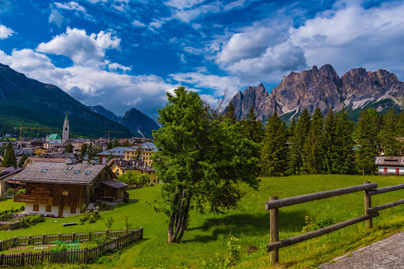

Piedmont and Lombardy
The northwest regions of Piemonte and Lombardy make up the country’s most cosmopolitan region.In the north, the presence of the Alps makes skiing and hiking prime activities, while Lombardy’s lakes and mountains are time-honoured tourist territory.
Places not to miss in Piedmont and Lombardy

- Egyptian Museum of Turin
- Serravalle Designer Outlet
- Royal Palace, Turin
- National Museum of Cinema
- Langhe
- Duomo di Milano
- Galleria Vittorio Emanuele II
- Il Cenacolo
- Piazza del Duomo
- Castello Sforzesco
- Varenna
- Milan city
- Bagolino town
- Bellagio
- Brescia
- Como
- Limone sul Garda
- Monte Isola